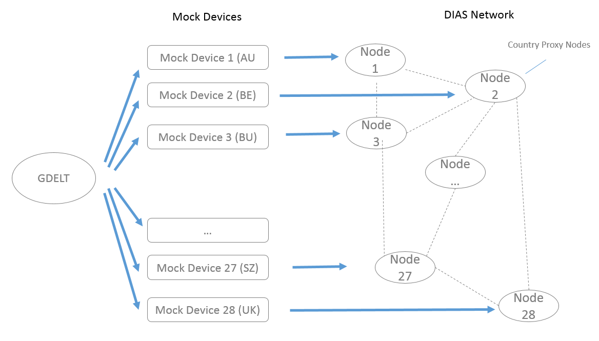
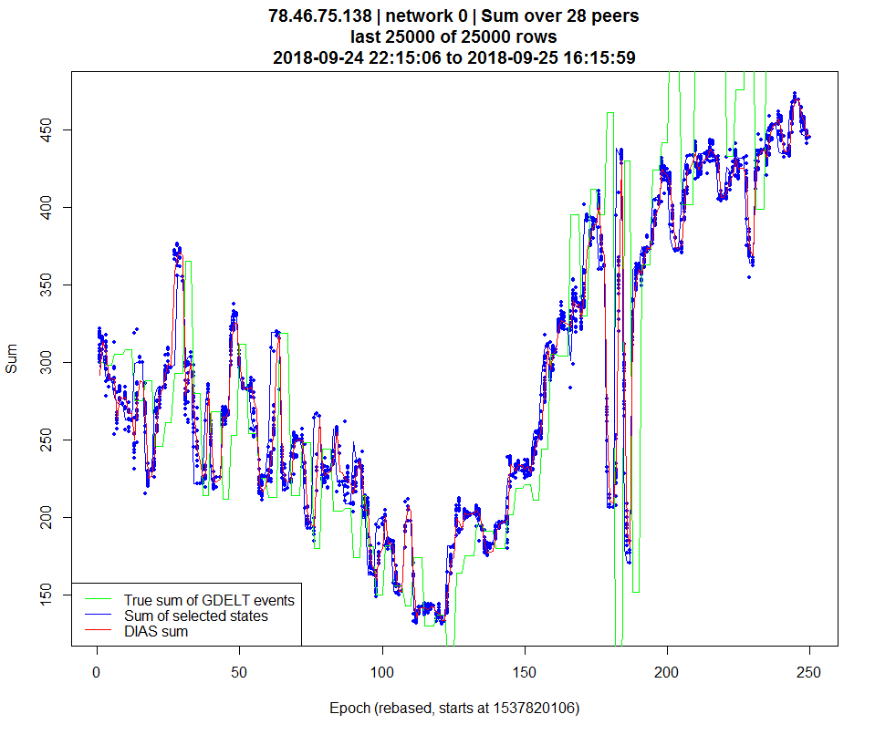
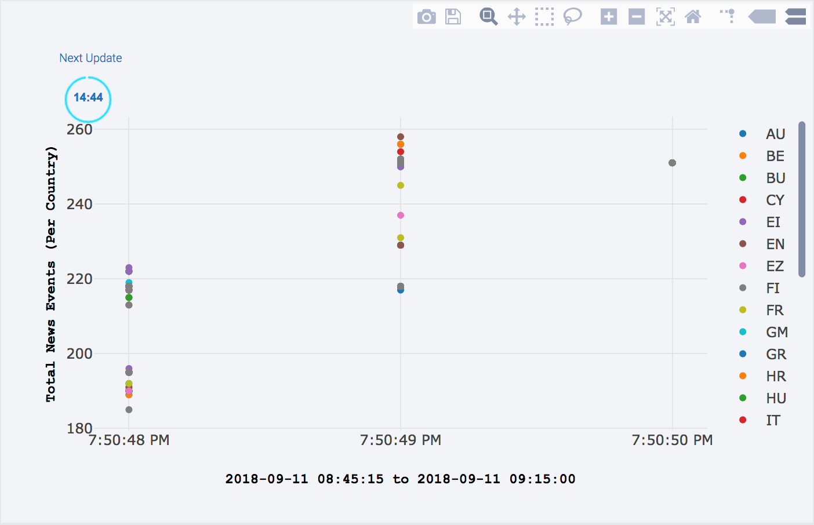
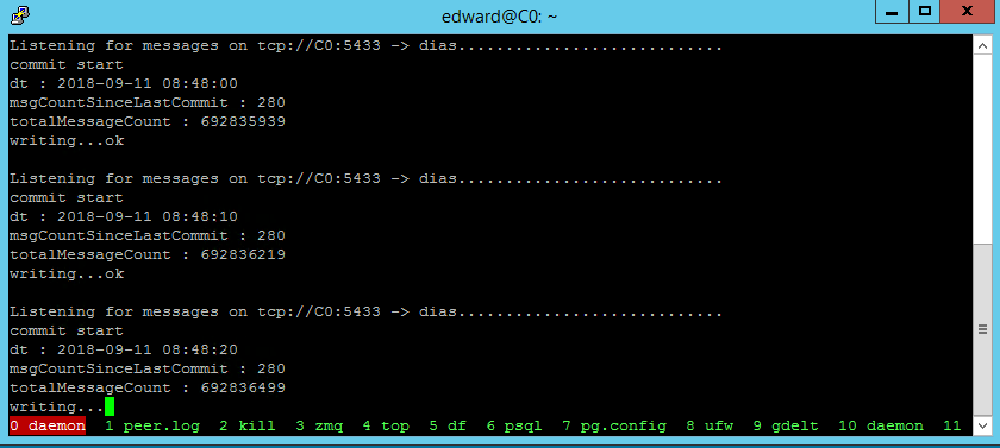
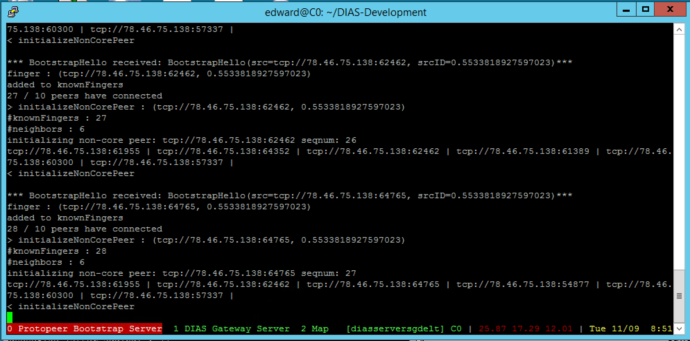
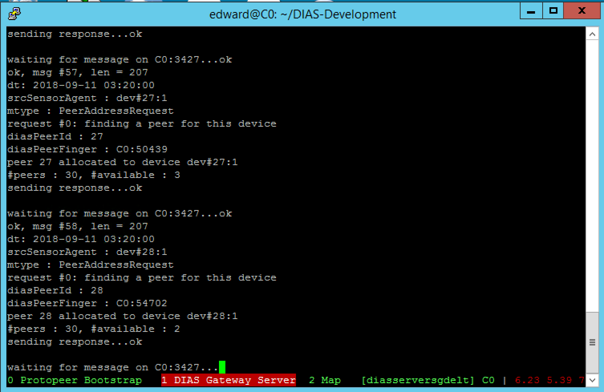
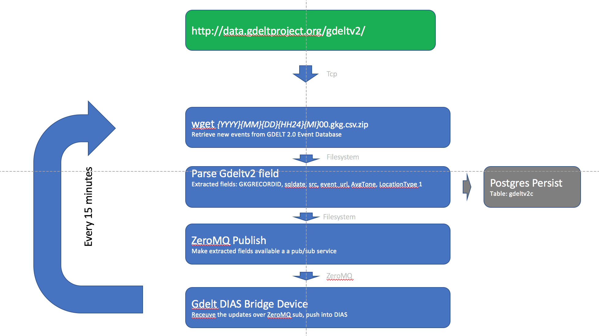

GDELT¶
Introduction¶
Have you ever wondered how many news event are produced every day in Europe?
To demonstrate the real-world applicability and feasibility to perform real-time distributed data analytics, we connected DIAS into GDELT to measure the number of news events in Europe, updated every 15 minutes. Such news events are a good indicator of the overall activity level of the continent. Indeed, if more news items are being produced, then it is likely that more physical events are taking place. And vice-versa.
The following application connects DIAS into GDELT. GDELT is the largest publicly available collection of near real-time news feed in the World, connecting to hundreds of newsfeeds and delivering updates every 15-minutes.
This DIAS application covers the 28 countries in Europe. Each country is represented by a DIAS node, so there are 28 DIAS nodes in the network that are cooperating to provide analytics about the network. Each DIAS node aggregates the number of news items produced by itself as well as the 27 other nodes in the network.
Application Setup¶
At a high level, data for the 28 European countries are retrieved from GDELT every 15 minutes and published to the 28 Mock Devices. The latter are required to compute selected and possible states from the number of news events generated in the GDELT stream. The selected and possible states are then passed along to the DIAS nodes in the DIAS Network, each DIAS node being paired with Mock Device. The real-time aggregation takes place inside the DIAS Network.
Figure 4.1 Overview of the DIAS-GDELT application.
Screenshots¶
Here is a screenshot of DIAS-GDELT in action. You can observe the fluctuations in the numbers of news events generated per 15-minute window.
For example, the number 200 (on the y-axis) indicates that 200 news events were generated concerning European countries over the relevant 15-minute window.
Figure 4.2 DIAS-GDELT aggregation process. Each blue dot represents the estimated sum from each DIAS node. The green line shows the true sum of news events from GDELT. The blue line shows the true sum of selected states, whilst the red line shows the sum of the DIAS aggregates.
You can also view the same aggregation process on the DIAS website, http://dias-net.org/gdelt/
Figure 4.3 DIAS-GDELT aggregation process as viewed in the webpage http://dias-net.org/gdelt/
Getting Started¶
This section is organised into the following sub-sections: - Installation - Start Commands for launching - Logging Daemon - Protopeer Boostrap Server and DIAS Gateway Server - DIAS Nodes - GDELT Subscription - Mock Devices
Installation¶
Please check the Pre-requisites, Download and Installation + Setup sections before continuing.
ssuming the DIAS application has been successfully installed, you only need to install the DIAS-GDELT application to make this demo work.
git clone https://github.com/epournaras/DIAS-GDELT.git``
Start Commands¶
First, as with all DIAS applications, we need to start the persistence daemon, so that real-time data can be efficiently stored to a database whilst reducing persistence work to a minimum within each DIAS node.
Logging Daemon¶
cd DIAS-Logging-System
./start.daemon.sh deployments/gdelt
The logging daemon is launched in a separate screen (that is, the GNU screen utility), as shown just below.
Figure 4.4 DIAS-Logging Daemon receiving messages and persisting them to a PostgreSQL database for offline and online system logging analysis
Protopeer Bootstrap Server and DIAS Gateway Server¶
Next, we start a Protopeer Bootstrap Server and DIAS Gateway Server. The bootstrap server allows DIAS nodes to discover each other at the beginning when they initially connect with the bootstrap server. . The gateway, on the other hand, allows mock devices to be assigned to DIAS nodes.
Note that we are using the gdelt deployment, which contains suitable configuration for running DIAS-GDELT. You can adjust the configuration by editing the file deployments/gdelt/dias.conf. The DIAS Installation Guide (-> DIAS Installation Guide) explains in further detail what can be configured.
cd DIAS-Development
./start.servers.sh deployments/gdelt
After starting the Protopeer Bootstrap Server and DIAS Gateway Server, you should see something like this.
Figure 4.5 The Protopeer Boostrap Server, that allows the DIAS nodes to initially connect with each other.
Figure 4.6 The DIAS Gateway Server, that binds devices such as mobiles phones to DIAS nodes
DIAS Nodes¶
Now that we have the Protopeer Bootstrap Server and DIAS Gateway Server running, we can launch the DIAS nodes, also known as aggregation peers. As the DIAS-GDELT simulation covers the European countries only, we will launch 28 DIAS nodes, one per European country. Note that, in this application, there is no need for carrier nodes to enable the join+leave process since countries don’t leave the planet (under normal conditions).
cd DIAS-Development
./start.aggregation.peers.sh deployments/gdelt 28 1 1
You should a screen that looks like below, with one DIAS node per screen tab.
To move to a different DIAS node, use the command ctrl+A then n or p to cycle forwards or backwards amongst the tabs of the screen. Since we have launched DIAS nodes that perform aggregation, they were given the prefix A (for aggregation), and then suffixed with the id of the DIAS node.
# moving to a different peer within a screen window
ctrl+A then n or p
Figure 4.7 The DIAS nodes , that will perform the aggregation. Each DIAS node is launched in a separate tab of the screen utility
GDELT Subscription¶
Now we can start the GDELT subscription. GDELT collects data from thousands of websites and makes this data available every 15 minutes as a compressed text file. The GDELT Subscription is a bash script that retrieves this file, decompresses it, and delivers the data to the 28 mock devices.
The bash and Python scripts obtain an update of the news events from GDELT every 15 minutes. The data is only obtained once from the GDELT website, then broadcast locally to each of the 28 mock devices. More details are provided below.
cd /DIAS-GDELT/python/gdeltv2.count
./auto.update.sh
Figure 4.8 The script that retrieves the news feed from GDELT every 15 minutes. Once new data has arrived, it is parsed and broadcast over ZeroMQ for the mock devices to process
Mock Devices¶
Finally, we are ready to start the mock devices. In the DIAS-GDELT application, each mock device represents a country. Thus we must launch 28 mock devices which listen to data updates over the ZeroMQ broadcast (mentioned just before) and update their selected and possible states accordingly.
cd DIAS-GDELT
./start.mock.devices.sh deployments/gdelt 28
Figure 4.9 The mock devices, each processing messages from the ZeroMQ broadcast and listening for changes in the selected state.
How it works?¶
Figure 4.10 High level view of the news flow
Raw data download from GDELT¶
At a high level, the process works as follows. The raw gdelt2 data files are retrieved from the GDELT website using the linux wget command-line utility. Files are decompressed and parsed in order to extract the following fields of interest for the DIAS-GDELT application:
GDELT fields
- GKGRECORDID
- sqldate
- src
- event_url
- AvgTone
- LocationType1
A detailed description of the meanings of these fields can be found in the GDELT 2.0 Event Database Codebook located here (http://data.gdeltproject.org/documentation/GDELT-Event_Codebook-V2.0.pdf)
The LocationType1 contains the FIPS 2-letter country code of the location of the event. It is used to assign the event to one of the 28 European countries in our application.
Note that this field does not capture which countries are affected by events, but rather where the event actually took place. FIPS country codes can be looked up on Wikipedia (https://en.wikipedia.org/wiki/List_of_FIPS_country_codes).
Local Publication Service¶
There are 28 DIAS nodes in this application, each representing a European country.
For sake of efficiency, list of news events (compressed text file) is only pulled once from the GDELT server every 15 minutes. After the decompressing and parsing, data is published using a ZeroMQ publish socket over a TCP port on the server. This allows the 28 mock devices to connect to this port and subscribe to the parsed GDELT events as ZeroMQ subscribers, whilst only retrieving the raw data once from GDELT.
GDELT provides an update every 15 minutes. The Local Publication Service is responsible for filtering European countries and for computing the number of events per country over this 15-minute time window. The field name for determining the country is LocationType1.
Mock Device¶
As with all DIAS applications, the DIAS nodes that perform the aggregation require selected and possible states as inputs. In the case of the DIAS-GDELT application, we only have the number of events per country provided by the Local Publication Service generated in the last 15 minutes. Thus an intermediate step is required to transform the most recent count of events into a list of possible states and a selected state chosen from the possible states. This task is handled by the mock device.
Each mock device is a separate JVM process, that subscribes to the Local Publication Service to receive the number of events per country. From this metric, each mock device computes: * The list of possible states * Selects the selected state from the list of possible states
Each mock device computes its possible states individually. The possible states are computed using a rolling window of the latest 27 observations. Each observation is the number of GDELT news events generated over a time window of 15 minutes for the relevant country that has been mapped to the mock device. In this case of this application, there are 9 possible states, that are equally spaced between the minimum and maximum of the 27 observations.
The mock device then communicates the possible and selected state to its assigned DIAS node, so that the DIAS network can perform the aggregation.
It could be argued that the functionality of the mock devices should be integrated into the DIAS nodes in order to reduce the complexity of the setup. The present design was chosen due to its modularity. Indeed, a number of different applications can use the exact same DIAS nodes. Only the mock devices are application specific. At time of writing, the applications that use DIAS nodes are DIAS-GDELT, Smart Agora, and the basic DIAS testbeds.
Database Persistence¶
Following publication over ZeroMQ, the parsed GDELT data is persisted to a PostgreSQL database. This allows the mock DIAS-GDELT devices to “warmup” on recent historical data, so that the queue for computing the possible states can be backfilled on startup, which allows each mock device to recover its state after a restart.
References¶
| GitHub repo: | |
|---|---|
| GDELT: |
http://data.gdeltproject.org/documentation/GDELT-Event_Codebook-V2.0.pdf |
| DIAS-GDELT microsite: | |